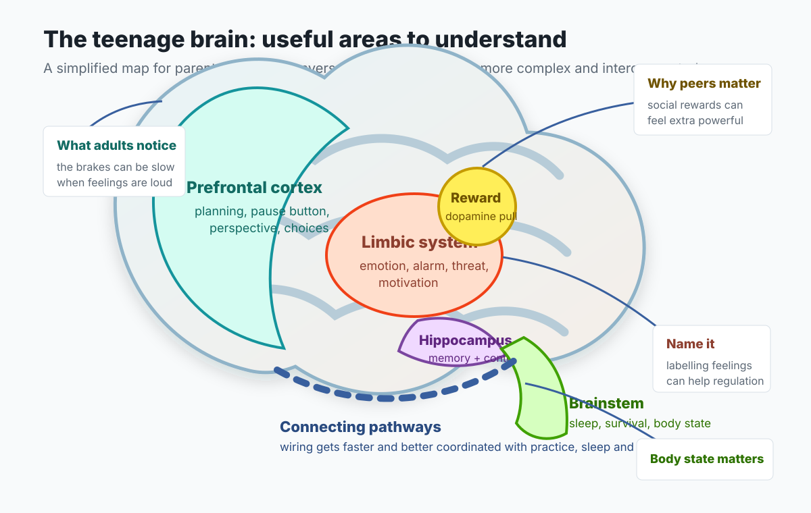

They may know the rule and still miss the moment
Knowing something is risky is not the same as being able to use that knowledge when embarrassed, excited, angry, tired or watched by friends.
Adolescent development
A practical guide to why adolescence can feel so intense, why peers matter so much, and how adults can respond with warmth, limits and a bit more patience.
Start here
Teenagers are not simply being difficult, irrational or dramatic. Adolescence is a distinct developmental stage where identity, social belonging, reward, independence and emotional intensity are all being reorganised. That does not remove boundaries or responsibility, but it changes how adults can help.
This page is for understanding and conversation. It is not clinical advice. If there is immediate danger, self-harm risk, overdose, serious injury, or urgent medical concern, use emergency or crisis routes.
Plain-English translation
The neuroscience is interesting, but families mostly need usable translations. These are the ideas to keep in mind during arguments, school worries, friendship dramas and risky moments.
Knowing something is risky is not the same as being able to use that knowledge when embarrassed, excited, angry, tired or watched by friends.
Warmth does not mean giving in. It means the young person can still feel you are on their side while you hold a boundary.
Ask who will be there, what pressure might show up, how they can leave, and which adult they can contact if things shift.
Big picture
The teenage brain is built for transition: moving from childhood dependence towards adult identity, relationships and responsibility. Some of the behaviours that frustrate adults are part of that transition.
New experiences become especially compelling. That can mean creativity, learning and courage. It can also mean boredom, thrill seeking or poor split-second choices.
Being accepted, excluded, watched or judged can feel huge. Teenagers may take more risks around peers, but they may also become more cautious if looking foolish feels socially dangerous.
Emotional systems can react quickly while planning, inhibition and perspective-taking are still developing. A calm conversation later may work better than a lecture in the moment.
Teenagers are working out who they are, how others see them, what they value, and where they belong. That work can look like self-absorption from the outside.
What is changing?
Adolescent brain development involves pruning, strengthening and faster communication between brain systems. The headline is not "teens have no brakes"; it is that the reward, emotion, social and control systems are developing on different timetables.
The brain keeps and strengthens connections that are used often and trims some that are not. This helps the brain become more efficient, but it also means experience, routines, relationships, sleep, learning and stress all matter.
As brain pathways become better insulated, information can travel more efficiently. Over time, this supports planning, judgement, self-control, emotional regulation and perspective-taking.
Teenagers still need limits. They also need chances to practise judgement in situations where mistakes are survivable and adults stay connected.

Social sensitivity
Adolescence is a period where the social self becomes very important. Teenagers may be acutely aware of how they appear, how peers respond, and whether they belong.
Something that looks minor to an adult may feel consuming to a teenager. Their response is not always a choice to overreact; social evaluation can feel physically and emotionally intense.
A tired glance, blunt text or quiet pause may be read as criticism. If the nervous system is already on alert, the teenage brain may fill gaps with threat before reasoning catches up.
Risk, courage, silence and avoidance can all be shaped by who is watching. The same young person may make a sensible choice alone and a very different choice in a peer group.
Research spotlight
Albert, Chein and Steinberg's review of adolescent decision-making research is useful because it explains why teenagers can seem sensible in one setting and impulsive in another. The difference is often the social context.
In driving-game studies, adolescents did not simply take more risks all the time. Peer presence or peer observation increased risky choices much more for adolescents than for adults.
The research model suggests that peer-related cues make immediate rewards feel more valuable. That can tilt a teenager towards the short-term social payoff of a risky choice.
The cognitive-control system strengthens gradually across adolescence. In emotionally or socially charged moments, it may be harder to coordinate feelings, peer pressure and longer-term consequences.
Resistance to peer influence varies. A young person who finds peer approval especially powerful may need more planning, rehearsal and exit routes around high-pressure situations.
Do not only ask "does my teenager understand the risk?" Also ask "who will be there, what will they gain socially, and how easy is it to pause or leave?"
Reward and risk
Some risk is part of healthy development: trying, practising, failing, exploring, speaking up, competing, travelling independently or making new friends. The adult task is to reduce catastrophic risk while preserving growth.
Emotion regulation
A simple way to explain emotional overwhelm is that the thinking, planning part of the brain loses easy access to the alarm and survival systems underneath. In that state, reasoning, empathy and future thinking may drop sharply.
Parenting stance
Teenagers need adults who can stay connected while allowing more separation. A useful stance is: I am on your side, I will not control every choice, and I will still hold the safety line.
Connection is not the same as approval. A teenager can know you dislike a behaviour while still feeling you are not withdrawing love or dignity.
Long explanations often arrive when the teenage brain is least able to use them. Short, clear, calm language is more likely to survive the moment.
Offer choices where choices are real. Keep boundaries where safety, health, consent, school law or safeguarding are involved.
Teenagers often need adults who are not their parents: relatives, mentors, teachers, coaches, therapists, youth workers or family friends.
When to seek more help
Brain development can explain some intensity and impulsiveness. It should not be used to minimise persistent low mood, serious anxiety, eating concerns, self-harm, substance risk, trauma, abuse, exploitation or a young person saying they cannot cope.
Seek advice if sleep, eating, hygiene, attendance, friendships, family life or ordinary routines are significantly affected or worsening.
Escalate promptly for self-harm, suicidal thoughts, overdose, running away, exploitation, serious aggression, not eating or drinking, or inability to stay safe.
If home and school keep repeating the same arguments without progress, bring in a GP, school nurse, SENCO, Early Help, CYPS/CAMHS or another appropriate service.
Evidence and further reading
This page paraphrases themes from an attached parent education handout and cross-checks them against public adolescent-development sources. Use live clinical and safeguarding sources for decisions.
Overview of childhood and adolescence as critical stages for mental health, brain development and social-emotional skills.
Research summary on reward, self-control, limbic development and prefrontal development in adolescent risk-taking.
Research article on peer influence, reward systems and the social context of adolescent risk-taking.
Current Directions in Psychological Science review on peer context, adolescent decision-making, reward sensitivity and cognitive control.
Practice-focused summary of adolescent social sensitivity, peer influence, learning and risk.